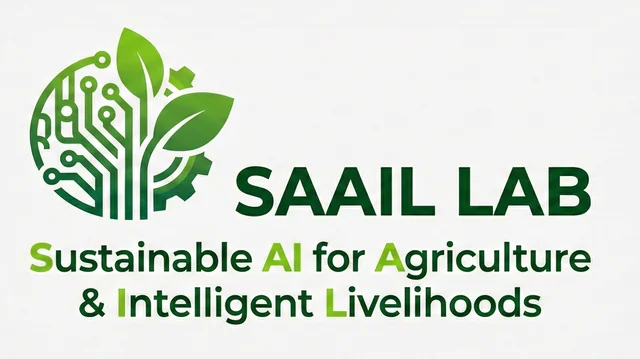

Innocent Nyalala
AI Researcher & Assistant Professor of Data Science and AI
School of Engineering and Science, IIT Madras Zanzibar
Associate Research Fellow, Wadhwani School of Data Science & AI, IIT Madras Chennai
I am passionate about leveraging Artificial Intelligence, Machine Learning, and Deep Learning to create positive real-world impact, particularly in agriculture and healthcare across East Africa. As the Principal Investigator of SAAIL Lab (Sustainable AI for Agriculture & Intelligent Livelihoods) at IIT Madras Zanzibar, I lead research developing transformative AI solutions for agriculture, precision farming, crop disease detection, healthcare AI, and medical imaging in Tanzania, Kenya, and across the African continent through ethical innovation and sustainable development.
Latest News
Recent updates, achievements, and announcements

Leading transformative AI research for East Africa through ethical innovation, sustainable development, and cutting-edge technology. Our mission is to develop AI solutions that address critical challenges in agriculture and healthcare across the African continent.
Explore SAAIL LabResearch
Advancing AI for sustainable development and real-world impact
Research Interests
Current Research Projects
AI for Smart Agriculture
Developing AI techniques to enhance agricultural practices, improve resource management, and promote sustainability across East Africa. Focus on crop disease detection, yield prediction, and precision farming.
Medical Imaging - Placental Analysis
Application of AI to analyze placental images for improved maternal and fetal health diagnostics and monitoring.
Swahili Speech & Text Processing
Developing NLP tools for the Swahili language, with applications in agriculture and healthcare for East African communities.
Blockchain for Spice Supply Chain
Investigating blockchain technology to improve transparency, traceability, and efficiency in Zanzibar's famous spice supply chain.
Research Collaborations
Prof. Nirav Bhatt
Prof. Dr. Sunil Sazawal
Dr. Soumya Banerjee
Dr. Vikranth H. Nagaraja
Dr. Jiayu Zhang
Publications
Selected peer-reviewed publications in top-tier journals
2025
2024
2021
Conferences & Speaking
Keynotes, presentations, and academic engagements
AI for Sustainable Agriculture Summit
Keynote on "Transforming East African Agriculture through Ethical AI"
Zanzibar, Tanzania
Keynote SpeakerZanzibar Innovation Day
Panel discussion on AI research and innovation in East Africa
IIT Madras Zanzibar
Panel DiscussionInternational Conference on Agricultural Engineering
Technical presentation on computer vision for crop disease detection
Virtual
Technical PresentationDeep Learning Workshop for Agricultural Applications
Hands-on workshop on implementing CNN models for plant disease detection
Nanjing, China
WorkshopAvailable for Speaking Engagements
I welcome invitations to speak at conferences, workshops, and academic events on topics including:
Education & Teaching
Education
PhD in Engineering
Agricultural Electrification & Automation
Experience
Associate Research Fellow
Wadhwani School of Data Science & AI, IIT Madras Chennai, India
Courses Taught at IIT Madras Zanzibar
Current Semester (Oct 2025 - Feb 2026)
- Z5007 - Programming and Data Structures (MTech)
Previous Semesters
- Z5008 - Big Data Lab (MTech) Feb-Jul 2025
- Database Management Systems Feb-Jul 2025
- Z2005 - Programming and Data Structures Oct 2024-Feb 2025
Graduated Students
Mr. Makame Mohammed Haji
MTech Graduate (July 2025)
Explainable ML Models for Prediction of Preterm Birth Using Metabolomics Data
Current MTech Students
Co-supervised Students
Mr. Michael Duen
MTech Student (Co-guided)
Agricultural AI: Maize Disease Detection & Classification
PhD Supervision
Incoming PhD Student
Starting February 2026
PhD Co-supervision
Currently co-supervising 4 PhD candidates
Prospective Students
I am actively seeking motivated MTech and PhD students interested in AI for agriculture, healthcare AI, computer vision, or NLP. Join SAAIL Lab to work on cutting-edge research with real-world impact in East Africa.
Get in TouchAcademic Services
Journal Reviewing
- Computers and Electronics in Agriculture
- Journal of Food Engineering
- Artificial Intelligence in Agriculture
- Scientific Reports (Nature)
- Smart Agricultural Technology
Committee Membership
- MTech Project Committee - IIT Madras Zanzibar
- Faculty Recruitment Committee - IIT Madras Zanzibar
Administrative Roles
- In-Charge of Computing Resources - IITMZ
- Former HoD, Computer Science - EAU (2017)
- Former Senate Member - EAU (2017)
Contact
Let's connect and collaborate
Primary Email
innocent@iitmz.ac.inSecondary Email
innocentnyalala@gmail.comPhone (Tanzania)
+255 753 864 855
Phone (Kenya)
+254 791 349 216
Office Address
School of Engineering and Science
IIT Madras Zanzibar Campus
Office 105, Door F1
P.O. Box 2496, Zanzibar, Tanzania